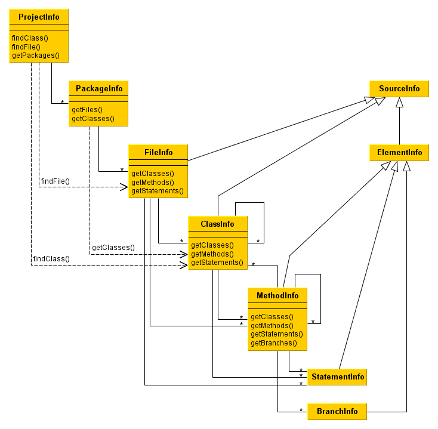

Model
Class overview

Possible entity nesting
| entity below can be nested in entity | branch | statement | method | class | file | package |
| branch | ||||||
| statement | ||||||
| method | ||||||
| class | ||||||
| file | ||||||
| package |
Comments
N - new in Clover 3.2.0
1 - there are helper methods PackageInfo.getClasses() /
getAllClasses() which returns classes from a package
2 - there are helper methods
PackageInfo.getClassesIncludingSubPackages() / getAllClassesIncludingSubPackages() searching for
classes in nested packages
From a logical perspective a branch should be nested inside a statement, e.g. "if (a > 5) .." has one statement with true and false branches in it. However, due to performance reasons, branches are kept aside statements, directly under a method. It's planned to add branches also under a class and a file in one of future Clover releases.
Since Clover 3.2 it's possible to nest classes inside classes. This can be used to model an inner class such as:
class A {
class B { }
}
Clover does not keep inner classes this way, however. All inner classes are kept directly under a file. One of the reasons for such approach is a separation of code metrics, i.e. a complexity of an inner class B does not count to the complexity of a parent class A.
Clover does not keep anonymous inline classes as a class entity in the model. Instead of this, methods of an anonymous class are being added to the parent class. This is a legacy issue.
Note that Clover 3.2 keeps lambda functions as classes declared under a method. Due to fact that lambda functions can be converted to a functional interface and vice versa, we plan to fix it and make it consistent in a future Clover release. Therefore, anonymous inline classes will have their own entity in a database model and will be kept under an enclosing method.
Java API
Interfaces describing the database structure are located in the com.atlassian.clover.api.registry package (JavaDoc).
They can be grouped into few categories:
- basic entities stored in a database are represented by ProjectInfo, PackageInfo, FileInfo, ClassInfo, MethodInfo, StatementInfo and BranchInfo
- these entities implement HasPackages, HasFiles, HasClasses, HasMethods, HasStatements or HasBranches interfaces which allow to navigate to their children
- HasParent, EntityContainer and EntityVisitor allows to get to the parent entity (note that some entities might have different parent types)
- HasMetrics, HasAggregatedMetrics returns information about code metrics
- helper interfaces describing data structures such as MethodSignatureInfo, Annotation, AnnotationValue etc
Reading from a Clover database
An example how to read a content of a database.
If you'd like to read a database without coverage, then replace "CloverDatabase.loadWithCoverage(..)" by "new CloverDatabase(initstring)"
import com.atlassian.clover.CloverDatabase;
import com.atlassian.clover.CoverageDataSpec;
import com.atlassian.clover.api.registry.ClassInfo;
import com.atlassian.clover.api.registry.FileInfo;
import com.atlassian.clover.api.registry.MethodInfo;
import com.atlassian.clover.api.registry.PackageInfo;
import com.atlassian.clover.api.registry.ProjectInfo;
import java.io.PrintStream;
public class SimpleRegistryDumper {
public static void main(String[] args) throws Exception {
if (args.length != 1) {
System.err.println("Usage:");
System.err.println("java " + SimpleRegistryDumper.class.getName() + " database");
} else {
// read clover database together with coverage recording files, use time span=0 (latest build)
CloverDatabase db = CloverDatabase.loadWithCoverage(args[0], new CoverageDataSpec());
ProjectInfo projectInfo = db.getRegistry().getProject();
// print some project details
printProject(projectInfo, System.out);
}
}
private static void printProject(ProjectInfo db, PrintStream out) {
for (PackageInfo packageInfo : db.getAllPackages()) {
out.println("package: " + packageInfo.getName());
for (FileInfo fileInfo : packageInfo.getFiles()) {
out.println("\tfile: " + fileInfo.getName());
for (ClassInfo classInfo : fileInfo.getClasses()) {
out.println("\t\tclass: " + classInfo.getName());
for (MethodInfo methodInfo : classInfo.getMethods()) {
out.println("\t\t\tmethod: " + methodInfo.getName());
}
}
}
}
}
}
Writing to a Clover database
import com.atlassian.clover.api.CloverException;
import com.atlassian.clover.api.instrumentation.InstrumentationSession;
import com.atlassian.clover.api.registry.FileInfo;
import com.atlassian.clover.api.registry.MethodInfo;
import com.atlassian.clover.api.registry.StatementInfo;
import com.atlassian.clover.context.ContextSet;
import com.atlassian.clover.registry.Clover2Registry;
import com.atlassian.clover.registry.FixedSourceRegion;
import com.atlassian.clover.registry.entities.MethodSignature;
import com.atlassian.clover.registry.entities.Modifier;
import com.atlassian.clover.registry.entities.Modifiers;
import com.atlassian.clover.registry.entities.Parameter;
import com.atlassian.clover.spi.lang.LanguageConstruct;
import java.io.File;
import java.io.IOException;
public class SimpleCodeInstrumenter {
private Clover2Registry registry;
private InstrumentationSession session;
public SimpleCodeInstrumenter(String initString, String projectName) throws CloverException {
try {
final File dbFile = new File(initString);
registry = Clover2Registry.createOrLoad(dbFile, projectName);
if (registry == null) {
throw new CloverException("Unable to create or load clover registry located at: " + dbFile);
}
} catch (IOException e) {
throw new CloverException(e);
}
}
public void startInstrumentation(String encoding) throws CloverException {
session = registry.startInstr(encoding);
}
public Clover2Registry endInstrumentation(boolean append) throws CloverException {
try {
session.close();
if (append) {
registry.saveAndAppendToFile();
} else {
registry.saveAndOverwriteFile();
}
return registry;
} catch (IOException e) {
throw new CloverException(e);
}
}
/**
* This method should perform the actual instrumentation. On every code construct you find in your
* source file(s) being instrumented (such as file, class, method, statement, branch) you shall call
* proper handler from InstrumentationSession class in order to record data for a given code entity
* in the Clover database.
*/
public void instrument() {
// note: there is no need to call session.enterPackage(packageName), it will be called from
// session.enterFile(); the same applies to session.exitPackage()
// example: register a file with attributes such as enclosing package, number of lines, time stamp, checksum
String packageName = "com.acme.my.package";
File sourceFile = new File("com/acme/my/package/Foo.java");
FileInfo fileInfo = session.enterFile(packageName, sourceFile,
200, 100, sourceFile.lastModified(), sourceFile.length(), 3423452);
// example: register a class (in current file)
session.enterClass("Foo", // class name
new FixedSourceRegion(10, 1), // start row:column
Modifiers.createFrom(Modifier.PUBLIC, null), // modifiers and annotations
false, false, false); // is interface, is enum, is annotation
// example: add a method to the Foo class
MethodSignature methodSignature = new MethodSignature("helloWorld", null, // method name and generic type
"void", // return type
new Parameter[] { new Parameter("String", "name") }, // formal parameters
null, // throws
Modifiers.createFrom(Modifier.PROTECTED | Modifier.STATIC, null)); // modifiers
MethodInfo methodInfo = session.enterMethod(new ContextSet(),
new FixedSourceRegion(12, 1), // start row:column
methodSignature, // signature
false, // is test method
null, // test name (if different from the method name)
false, // is lambda function
5, // cyclomatic complexity
LanguageConstruct.Builtin.METHOD);
int methodIndex = methodInfo.getDataIndex(); // use this index in your coverage recorder
// example: add a statement in the helloWorld method
StatementInfo statementInfo = session.addStatement(new ContextSet(),
new FixedSourceRegion(13, 1, 13, 44), // start row:column, end row:column
3, // cyclomatic complexity
LanguageConstruct.Builtin.STATEMENT);
int statementIndex = statementInfo.getDataIndex(); // use this index in your coverage recorder
// end method, class and a file
session.exitMethod(14, 1); // end row:column
session.exitClass(30, 2); // end row:column
session.exitFile();
}
public static void main(String[] args) throws CloverException {
if (args.length != 1) {
System.err.println("Usage:");
System.err.println("java " + SimpleCodeInstrumenter.class.getName() + " database");
} else {
SimpleCodeInstrumenter instrumenter = new SimpleCodeInstrumenter(args[0], "MyProject");
instrumenter.startInstrumentation("UTF-8");
instrumenter.instrument();
instrumenter.endInstrumentation(true);
}
}
}
Creating a global coverage recording file
In addition to the Clover database, which holds information about code structure, you need also to generate a global coverage recording file. It keeps information about hit counts for every code element registered in a database (i.e. how many times given method/statement/branch was executed).
import com.atlassian.clover.api.CloverException;
import com.atlassian.clover.recorder.FileBasedGlobalCoverageRecording;
import com.atlassian.clover.registry.Clover2Registry;
import com_atlassian_clover.Clover;
import java.io.File;
import java.io.IOException;
public class GlobalCoverageFileGenerator {
private static void convertCoverage(final Clover2Registry registry) throws IOException {
// TODO fill this array with hit counts, e.g. from another coverage tool
int[] elements = { 1, 2, 3, 4, 5 };
// note: should be >= from registry.getVersion() otherwise will be discarded as outdated
long coverageTS = registry.getVersion();
// generate global recording file name (<clover.db><randomhash>_<timestamp>)
String recname = Clover.getRecordingName(12345, registry.getRegistryFile().getAbsolutePath(), coverageTS);
// create global coverage file
flushToDisk(recname, registry.getVersion(), coverageTS, elements);
}
/**
* @param dbname name of the coverage recording file
* @param dbversion database timestamp
* @param writeTS coverage file timestamp
* @param elements an array with hit counts
*/
private static void flushToDisk(final String dbname, long dbversion, long writeTS, int[] elements) throws IOException {
new FileBasedGlobalCoverageRecording(dbname, dbversion, writeTS, new int[][] {elements}, elements.length).write();
}
public static void main(String[] args) throws IOException, CloverException {
final Clover2Registry registry = Clover2Registry.fromFile(new File("clover.db"));
convertCoverage(registry);
}
}
You can find these code samples on https://github.com/openclover/clover-examples.